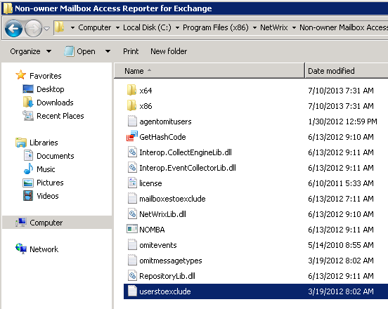

How do I filter out certain users from mailbox access reports?
To exclude a specific user from the mailbox access reports you need to add that user to
userstoexclude.txt located in the product installation
directory. Since this file is read in the beginning of each data collection, it would only
affect newly collected data.
The file structure is following:
- Each entry must be a separate line.
- Wildcards (* and ?) are supported.
- Lines that start with the # sign are treated as comments and are ignored.

NOTE. The userstoexclude.txt file contains a list of
users who must be excluded from reports if they perform non-owner access to mailboxes. But
the audit data for these users will still be stored in the snapshots, so if a user is
removed from this list, the information on the user actions can be viewed with the Report
Viewer.